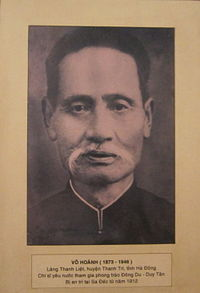

Cụ VÕ-HOÀNH, hiệu Ngọc Tiễn, người làng Quang, huyện Thanh-Trì, tỉnh Hà-Đông, sinh năm Quí-Dậu (1873), con cụ Tú VÕ-HOÀNG-DIỆU.
Sinh trưởng trong một gia đình nho học nên cụ sớm đổ Cử-nhân và thành thân với cụ Bà NGÔ-THỊ-NGUYÊN, con quan Ngự-Sử NGÔ-TÔN-ĐỨC, hạ sinh được năm ái-nữ.

.Mặc dầu xuất thân khoa cử, nhưng gặp thời buổi ngoại thuộc, cụ không màng danh lợi chốn quan trường, nuôi chí giúp dân cứu nước thoát dòng ngoại xâm. Năm 1907, cụ tham gia phong trào Duy-Tân, cùng cụ NGUYỄN-QUYỀN(2) và một số đồng chí đứng ra sáng lập trường "Đông-Kinh Nghĩa-Thục".
Cụ VÕ-HOÀNH phụ trách việc quyên tiền và cổ võ các thân hào nhân-sĩ tham gia lúc phòng trào đang lên: Phong trào Đông-Du cầu học và Phong trào cầu viện Duy-Tân tự cường để cứu quốc.
Trong khúc ca "Nam Thiên Phong Vân" có đoạn mô tả cụ VÕ-HOÀNH như sau:
"Người nghĩa hiệp có xa đâu đó,
Đất làng Quang Họ VÕ tên HOÀNH.
Tráng thay! Cái khí sinh bình,
Hai tay hồ thỉ tung hoành bốn phương.
Say đở chén ngang trời dọc đất,
Ngâm rồi câu quỉ khóc thần kinh.
Trông ra thấy nước non mình,
Quyết đem gan óc mà ganh lại trời.
Bịnh nước thấy lâu ngày suy nhược,
Túi Mạnh thường giở thuốc kinh luân.
Người kiếm hiệp, khách quan thân,
Bắc Nam đủ mặt, xa gần khắp nơi.
Hòn máu nóng đúc người chí sĩ,
Tấm lòng vàng kết nghĩa tự giao.
Những là cát biển bùn ao,
Tiện tay tiêu dụng biết bao cho cùng.
Ngồi vận động tính trong sự thế,
Bốn phương trời góc bể xôn xao.
Lưỡi như sóng mắt như sao,
Giang hồ tỏ mặt anh hào nước ta."
Năm 1908, Trường Đông-Kinh-Nghĩa-Thục bị đóng cửa, rồi chẳng bao lâu, nhà cầm quyền Pháp ghép tội, bắt giam cụ cùng cụ NGUYỀN-QUYỀN đưa ra Côn-Đảo vào năm 1909.
Sau đó, cụ bị đưa vào Nam an-trí tại Sa-Đéc. Qua một thời gian lắng dịu, cụ lại âm thầm hoạt động cách mạng như khi còn ở Bắc. Cụ đã ám trợ cho các đồng chí như NGUYỄN-THẦN-HIẾN, NGUYỄN-QUANG-DIÊU.
Năm 1935, cụ kết thông gia với đồng chí trong phong trào "Đông-Kinh-Nghĩa-Thục" là cụ Nguyễn-Quyền.
Đến ngoài 70 tuổi, cụ vẫn còn quắc thước hào hùng. Đôi khi xót xa vì việc đời, cụ đã bộc lộ tâm sự trong nhiều bài thơ như bài sau đây:
"Ngao ngán lòng tôi tối lại mai,
Lòng tôi, tôi biết giải cùng ai.
Ngàn năm cố quốc hồn chưa tỉnh,
Hai chữ đồng tâm nét cũng sai.
Mai lệ chép thơ phơi trước mắt,
Coi tiền như mạng bỏ ngoài tai.
Thôi thôi biết nói chi cho hết,
Càng nói càng thêm nổi thở dài."
Năm 1945, mặc dù đã ngoài bảy mươi, cụ VÕ-HOÀNH vẫn còn tráng chí, bỏ nhà tham gia phong trào chống thực dân Pháp.
Cụ mất ngày mùng 5 tháng 11 năm Bính Tuất (1946) hưởng thọ 73 tuổi. Mộ cụ hiện an táng tại xã Mỹ-Hội, quận Cao-Lãnh, Kiến-Phong.
Chú thích:
[1] Viết theo tài liệu của tác giả Nguyễn-Bá-Thế đăng trên nhật báo Đuốc Nhà Nam số ra ngày 3-2-71 đến số ra ngày 7-2-71.
[2] Cụ NGUYỄN-QUYỀN (1869-1941), lãnh tụ chính của phong trào "Đông-Kinh Nghĩa-Thục", bị nhà cầm quyền Pháp an-trí tại Bến-Tre. Mộ cụ hiện táng tại xã Tân-Xuân, quận Châu-Thành, tỉnh Sa-Đéc. (Xem "Đông-Kinh Nghĩa-Thục" của tác giả Đào-Trinh-Nhất hoặc "Đông-Kinh Nghĩa-Thục" của tác giả Nguyễn-Hiến-Lê.)